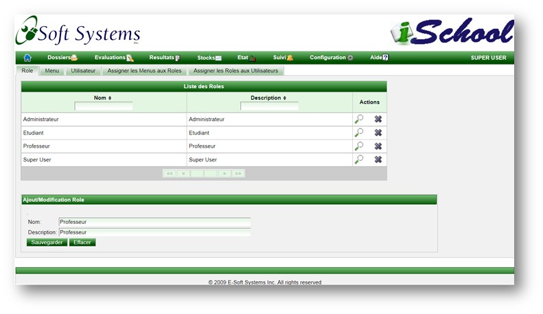
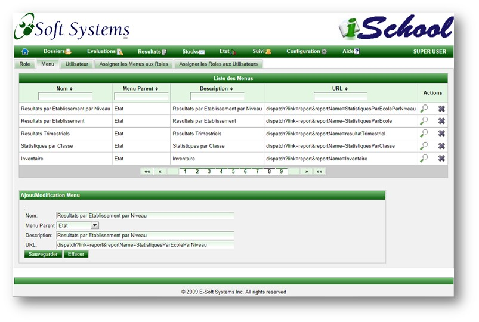
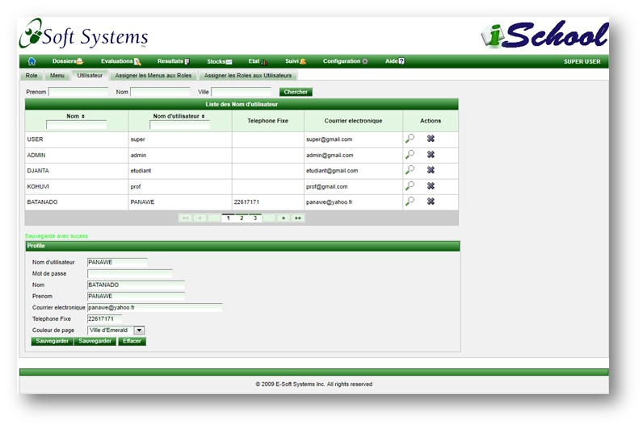
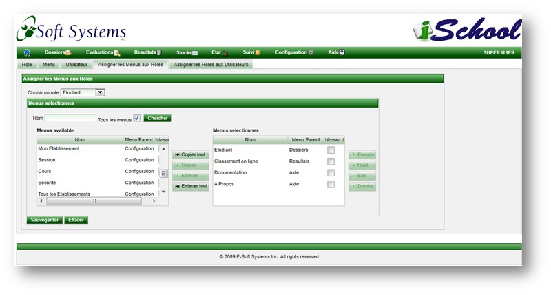
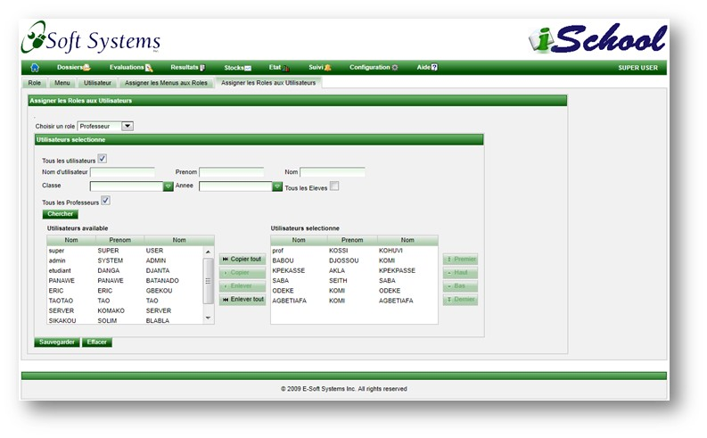

La gestion d'acces est basee sur les roles. Chaque utilisateur du systeme est assigne un role qui defini le niveau d'acces.
Chaque role est assigne une liste de menu avec acces en lecture seule ou lecture/ecriture.
Il y a quatre roles par defaut mais l'administrateur de l'etablissement peut en creer d'autres au besoins.
Ajout/Modification de role

Ajout/Modification de menu.
L'ajout d'un nouveau menu n'est necessaire qu'en cas de publication d'un nouvel etat.
Dans les autres cas, il s'agira de reorganisation ou de changement de nom ou description.

Maintient des utilisateurs
Chaque utilisateur peut changer son propre profile mais l'administrateur a egalement acces au profil de tous
les utilisateurs. Cette page peut etre utilisee par exemple pour changer le mot de passe d'un utilisateur au cas ou
il l'aurait oublie.

Assignation des menus a un role.
Le niveau d'acces permet de definir si l'acces est en lecture seule ou en lecture/ecriture. Lorsque la case est cochee,
l'acces est en lecture/ecriture.

Assignation des roles aux utlisateurs

Copyright © 2011, E-Soft Systems Inc